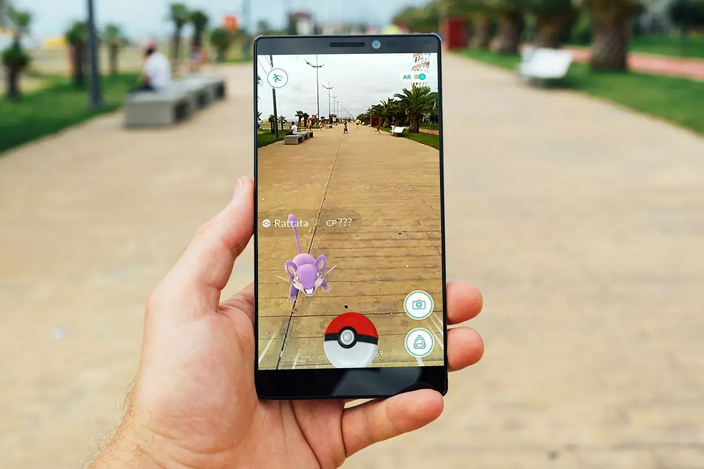
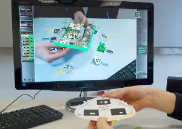
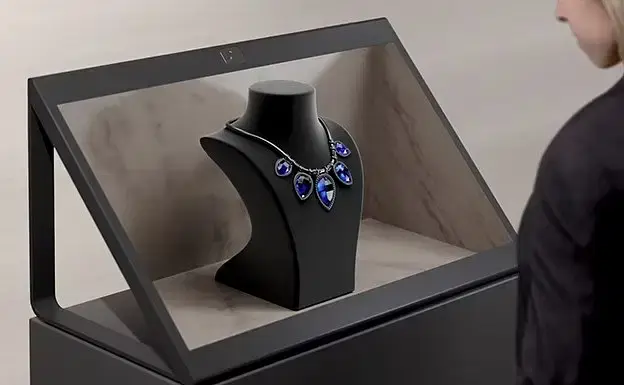

Augmented Reality atau AR adalah salah satu teknologi yang menggabungkan dunia nyata dengan objek virtual, baik 2D maupun 3D dan dapat ditampilkan secara real-time. AR memiliki beberapa teknik untuk menampilkan objek virtual, seperti Marker Based, Markerless, Face Recognition dan lain-lain. Smartphone, Tablet, PC, Monitor dan Head Mounted Display adalah perangkat yang dapat digunakan untuk menampilkan AR. Sebagai contohnya, anda dapat melihatnya pada gambar-gambar dibawah
Smartphone
Tablet

PC
Monitor
Head Mounted Display